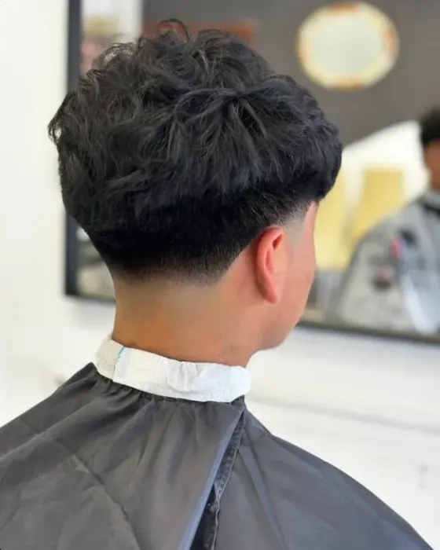
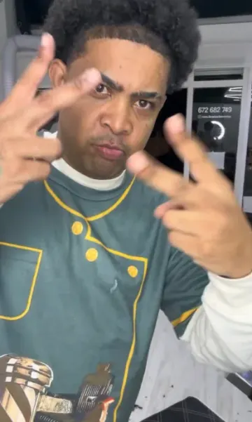

Mas Flow Barbería en Errenteria
Degradados, diseños con líneas y trenzas. Le cuentas al Domi cómo lo quieres y sales con tu corte, fino y a tu estilo.
Pide cita por Instagram
¿Qué te hacemos?
-
Cortes y degradados
Fades que se funden limpios, ajustados a cómo te gusta llevar el pelo.
-
Diseños con líneas
Líneas y formas marcadas en el corte. Lo hablas con el Domi y te lo deja a tu gusto.
-
Cortes para niños
Para los peques, con el mismo cuidado. El buen trato con los niños sale en las reseñas.
-
Trenzas, con Caro
En colaboración con Caro, que hace las trenzas. Pregunta por ellas al pedir cita.
Mira cómo quedan
5,0 de 5 en Google, con 15 reseñas
Degradados


“La mejor barbería que he estado, muy finos los cortes”
Diseños con líneas


“Muy buen servicio y super agradable el ambiente, volvere!!!”
Trenzas, con Caro


“Muy buen servicio, trato excelente tanto de la chica que hace las trenzas como del barbero. Se nota los conocimientos que tienen ambos y buen trato hacia niños.”
Pide tu cita

Llama o escríbele por Instagram y lo cuadras con él.
Horario
| Lunes | 12:00–20:00 |
|---|---|
| Martes | 10:30–20:00 |
| Miércoles y jueves | 10:00–20:00 |
| Viernes | 10:00–24:00 |
| Sábado | 10:00–19:00 |
| Domingo | Cerrado |
Horario según su ficha de Google.